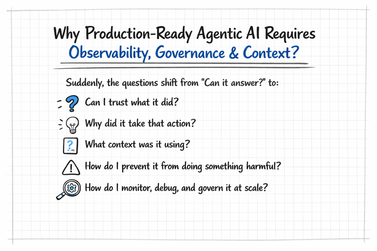

Why Production‑Ready Agentic AI Requires
Observability, Governance & Context

This article was published on May 2, 2026 to reflect the state of enterprise agentic AI practices at that time.
Table of Contents:
- Why PoCs Fail in Production: The gap between vibe‑coding demos and enterprise‑grade agentic systems.
- Observability : Tools that make agent behavior traceable, explainable, and debuggable.
- Governance & Guardrails: Enforcing deterministic, auditable, policy‑driven control.
- Context Awareness: Ensuring agents act on fresh, relevant, grounded enterprise context.
- Final Takeaway: Building agents that are reliable, governed, and production‑ready.
- Partnering with Tech-Insight-Group: Your Data Implementation Ally
- Call to action
Stay in the loop, follow us on LinkedIn to catch fresh articles every week.
If you're looking to get started with Generative AI, Agentic AI workflows, or migrating your workloads to Microsoft Fabric, partnering with Tech-Insight-Group LLC is your strategic gateway to expert-led consulting and hands-on training services tailored for real-world impact.
This blog was inspired by Jean Joseph, a data-driven professional with over tweenty years of experience helping organizations unlock insights through analytics and AI. I
Why This Matters — and Why “Vibe Coding” Isn’t Enough
In 2024–2026, the industry learned a painful truth: building a cool agent demo is easy; running an agent in production is not. Anyone can spin up a Copilot Studio, Microsoft Foundry or any other frameworks to create agents, wire a few tools, and show a slick PoC that “looks intelligent.” But the moment that same agent is expected to operate inside a real enterprise — with real data, real users, real compliance requirements, and real consequences — everything changes.
Suddenly, the questions shift from “Can it answer?” to:
- “Can I trust what it did?”
- “Why did it take that action?”
- “What context was it using?”
- “How do I prevent it from doing something harmful?”
- “How do I monitor, debug, and govern it at scale?”
This section is for AI architects, engineering leaders, platform owners, and enterprise builders who already know how to prototype — but now need to industrialize agentic AI.
The Key Challenges of Production‑Ready Agentic AI — and Why They Matter
Below are the three pillars that separate “fun demos” from safe, scalable, enterprise‑grade agentic AI systems. Each section starts with the problem, then shows how the pillar solves it.
1. Agent Observability — Because You Can’t Fix What You Can’t See
The Problem: Agents Don’t Fail Loudly — They Fail Silently and Confidently
In PoCs, failures are harmless. In production, failures are expensive.
Agentic systems don’t break like traditional software. They hallucinate, misinterpret context, call the wrong tool, or take a valid action for the wrong reason. Worse, they do it confidently, and often without throwing an exception.
Without deep observability, you’re blind to:
- Hidden reasoning errors: Silent failures inside the model’s internal reasoning steps lead to incorrect conclusions that never surface unless trace‑level thought telemetry is captured.
- Incorrect tool‑calling sequences: Agents may invoke tools in the wrong order, with wrong parameters, or with missing prerequisites, and without observability these execution faults remain undetected.
- Context drift across long tasks: Multi‑step or long‑running workflows accumulate subtle context inconsistencies over time, causing the agent to operate on outdated or misaligned state without any visible symptoms.
- Latency spikes caused by model retries: Automatic retries, rate‑limit backoffs, or degraded model performance introduce unpredictable latency patterns that are invisible without granular timing and retry telemetry.
- Subtle hallucinations that look “plausible”: The model generates confident but fabricated details that appear coherent, and without groundedness or provenance checks these errors pass through as valid outputs.
The Solution: Full‑Stack Agent Telemetry
Production‑ready agents require end‑to‑end visibility
- Trace-level logs of every reasoning step: Captures fine‑grained agent thought sequences, enabling full reconstruction of decision paths, error sources, and model‑driven state transitions.
- Tool call lineage (inputs, outputs, timing, retries): Records complete execution metadata for each tool invocation, supporting auditability, performance tuning, and root‑cause analysis across chained operations.
- Context snapshots at each decision point: Stores the exact context window (retrieved documents, memory state, user inputs) used at every reasoning step to ensure reproducibility and detect context drift.
- Safety event logs (blocked actions, guardrail triggers): Logs all safety interventions, including policy violations, blocked actions, and guardrail activations, providing a compliance‑ready audit trail.
- User–agent interaction heatmaps: Aggregates behavioral telemetry to reveal friction points, misinterpretations, and high‑impact interaction patterns across sessions.
- Drift detection for prompts, embeddings, and context windows: Monitors semantic changes in prompts, vector representations, and retrieved context to identify degradation, misalignment, or unintended model behavior over time.
Observability turns agent behavior from a black box into a diagnosable, improvable system. Without it, you’re flying blind.
Observability is no longer optional. It’s the backbone of any enterprise‑grade agentic system. Without it, again you’re flying blind — unable to debug behavior, trace decisions, or enforce governance.
Below is a concise breakdown of the three major observability approaches shaping the industry today, along with their strengths and limitations.
- OpenTelemetry OpenTelemetry provides an open, vendor‑neutral standard for tracing multi‑agent workflows and capturing agent reasoning across any backend.
- LangSmith / Proprietary Tools LangSmith and similar proprietary platforms deliver rich LLM‑specific debugging and dashboards but introduce vendor lock‑in through closed formats.
- Microsoft Foundry Observability: Microsoft Foundry Observability offers deep, enterprise‑grade multi‑agent tracing and safety insights built on OpenTelemetry, optimized for Azure‑centric stacks — without introducing vendor lock‑in.
2. Governance & Guardrails — Because Autonomy Without Control Is a Liability
The Problem: Agents Don’t Just Answer — They Act
In a PoC, an agent might “pretend” to update a CRM record. In production, it actually updates the CRM record.
That shift introduces real risk:
- Unauthorized actions: Agents may autonomously execute operations outside intended scope due to misaligned policies or ambiguous instructions.
- Data leakage: Model outputs or tool calls can inadvertently expose sensitive data through prompts, logs, or external API interactions.
- Over-permissioned tool access: Broad or unscoped permissions allow agents to invoke high‑impact tools without granular authorization boundaries.
- Irreversible operations (deleting data, sending emails, triggering workflows): Actions such as deletes, outbound communications, or workflow triggers can cause permanent state changes with no rollback path.
- Compliance violations: Autonomous decisions may bypass required controls, retention rules, auditability, or jurisdictional data‑handling constraints.
- Inconsistent behavior across environments: Variations in model versions, tool availability, or environment configuration lead to nondeterministic execution paths and unpredictable outcomes.
Enterprises cannot rely on “prompt‑based good intentions.” They need deterministic enforceable, auditable, policy‑driven control.
The Solution: Layered Governance for Agent Autonomy
A mature agent platform enforces:
- Role‑based tool access (least privilege): Enforces least‑privilege boundaries so agents can only invoke tools explicitly authorized for their role or capability profile.
- Action‑level approvals (human‑in‑the‑loop for high‑risk steps): Inserts human‑in‑the‑loop checkpoints for high‑risk operations such as financial transactions, data movement, or external communications.
- Policy‑driven constraints (data boundaries, rate limits, compliance rules): Applies deterministic guardrails that restrict what the agent can read, write, or execute.
- Deterministic fallbacks when the model is uncertain: Routes uncertain or low‑confidence model outputs to predefined, rule‑based logic to ensure safe and predictable outcomes.
- Environment isolation (dev/stage/prod): Segregates environments to prevent cross‑contamination of tools, credentials, or model behaviors.
- Versioned prompts, tools, and workflows: Tracks and locks versions to guarantee reproducibility, auditability, and controlled rollout.
Governance ensures that autonomy is bounded, predictable, and safe — not a free‑for‑all. Below are key tools for Governance & Guardrails — with Microsoft Entra ID serving as the identity backbone that makes all of them enforceable.
- Microsoft Purview (Data Governance & Access Control): Microsoft Purview provides Data‑as‑a‑Product–aligned DSPM by enforcing data boundaries, sensitivity labels, lineage, and access policies that prevent agents from retrieving or acting on information they are not authorized to use.
- Azure AI Content Safety (Policy Enforcement & Risk Mitigation): Azure AI Content Safety provides real‑time safety filters, policy checks, and risk scoring that stop agents from generating harmful, non‑compliant, or policy‑violating outputs.
- Copilot Studio Guardrails (Action Control & Autonomy Constraints): Copilot Studio Guardrails apply deterministic, policy‑driven constraints on tool access, action execution, and high‑risk operations to ensure agents act within approved enterprise boundaries.
3. Context Awareness — Because Agents Are Only as Smart as the Context They Hold
The Problem: Agents Don’t Know When They Don’t Know
Most PoCs assume the agent always has the right context. In production, context is dynamic, fragmented, and often incomplete.
Agents fail when:
- They use stale or irrelevant context: Agents may rely on outdated embeddings, expired cache entries, or obsolete retrieval results, leading to decisions based on context that no longer reflects system state or policy.
- They lose track of long-running tasks: Without durable state management, agents can drop execution threads, forget intermediate steps, or fail to resume workflows after interruptions.
- They misinterpret user intent: Ambiguous prompts or insufficient grounding cause the agent to infer incorrect goals, triggering unintended tool calls or workflow branches.
- They combine incompatible data sources: Agents may merge datasets with conflicting schemas, security classifications, or business rules, producing invalid or non‑compliant outputs.
- They hallucinate missing information: When required data is absent, the model may fabricate details instead of escalating, violating accuracy, safety, and compliance expectations.
Context drift is one of the most common — and most dangerous — failure modes.
The Solution: Context as a First-Class Architectural Component
- Context validation before every reasoning step: Ensures the agent verifies that retrieved inputs, tool outputs, and prior state are still accurate, authorized, and relevant before continuing execution.
- Context scoping (session, task, user, environment): Restricts what information the agent can access based on the active session boundary, user identity, task definition, and environment‑specific constraints.
- Context freshness checks: Detects stale embeddings, outdated cache entries, or expired retrieval results to prevent decisions based on obsolete or invalid information.
- Context provenance (where did this information come from?): Tracks the origin, lineage, and trust level of every piece of context so agents can differentiate authoritative data from unverified or low‑confidence sources.
- Context minimization to reduce hallucination risk: Limits the context window to only essential, validated inputs, reducing the likelihood of the model inferring or fabricating unsupported details.
- Context stitching for multi-agent or multi-step workflows:Aggregates and reconciles context across agents, tools, and workflow stages to maintain continuity, avoid drift, and ensure consistent state propagation.
When context is governed, validated, and observable, agents behave more like reliable operators and less like creative guessers. A Few Essential Tools for Context Awareness
Final Thoughts
Agentic AI is not hard because the models are complex — it’s hard because enterprises are complex. The leap from PoC to production is the leap from “this works once” to “this works safely, repeatedly, and at scale.”
Observability gives you visibility. Governance gives you control. Context awareness gives you reliability.
Together, they transform agentic AI from a novelty into an operational capability.
Call To Action
💡 Ready to Take the Next Step?
If you're looking to get started with Generative AI, Agentic AI workflows, or migrating your workloads to Microsoft Fabric, partnering with Tech-Insight-Group LLC is your strategic gateway to expert-led consulting and hands-on training services tailored for real-world impact.
Tech‑Insight‑Group LLC delivers measurable impact through expert consulting and hands‑on training, helping teams move from strategy to execution with confidence. Explore our services to see how we can accelerate your Data & AI journey — and let’s build something extraordinary together.
🙏 We welcome your feedback, let’s connect.
Thank you for reading Why Production‑Ready Agentic AI Requires Observability, Governance & Context. If you found this article helpful, feel free to like, share, or leave a comment, we’d love to hear your thoughts.
Why Production‑Ready Agentic AI Requires Observability, Governance & Context